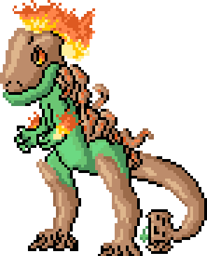
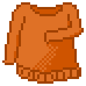
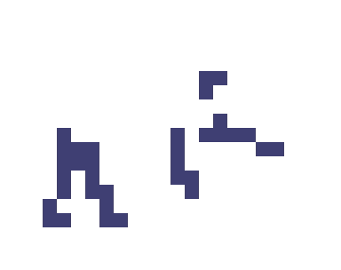
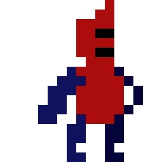
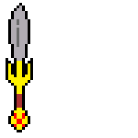

Advanced Techniques
More Outlines?
The inside of a sprite is not the only thing that can be coloured and shaded, you can do the same with the outline! This trick is very dependent on the artstyle you are trying to achieve.
Here is an example for coloured outlines that I made while experimenting:
Experiment with outlines and take ideas from different sources to see what fits your style.
Dithering
Dithering involves creating a checkerboard pattern with two colours or shades in order to achieve a gradient. It is best used in shading art, or to blend two colours when you are working with a limited colour palette
This is a shirt with a simple example of dithering:
Animation
Animating pixel art is not very easy to do without practice for a few reasons. In my experience trying it, the biggest problem is having a very cluttered sprite. Having lots of little details in a sprite, especially since they are already at a small scale causes a lot of clutter, and when you try to move around the pixels to animate it causes confusion for the artist and makes it difficult for the viewer to tell what they area looking at.
Good tips for animations would be to keep the designs very simple, and I suggest not using dithering to shade in an animation because it is difficult to keep the dithering pattern when it is moving.
When you animate pixel art, there are techniques that are similar to any other kind of animation. You should start by drawing the keyframes first, which are the most important frames in the animation, and then filling in the frames between.
Here are a couple of very simple animations I created of a ghoul and a knight walking:
 Smearing
Smearing is a technique used in various 2D animated media, including pixel art. Smearing involves stretching certain inbetween frames in order to show the impact of the movement, or that it happens at a great speed.
Here is one example of Smearing, but there are multiple ways to show this effect.
Previous Lesson Return to Top